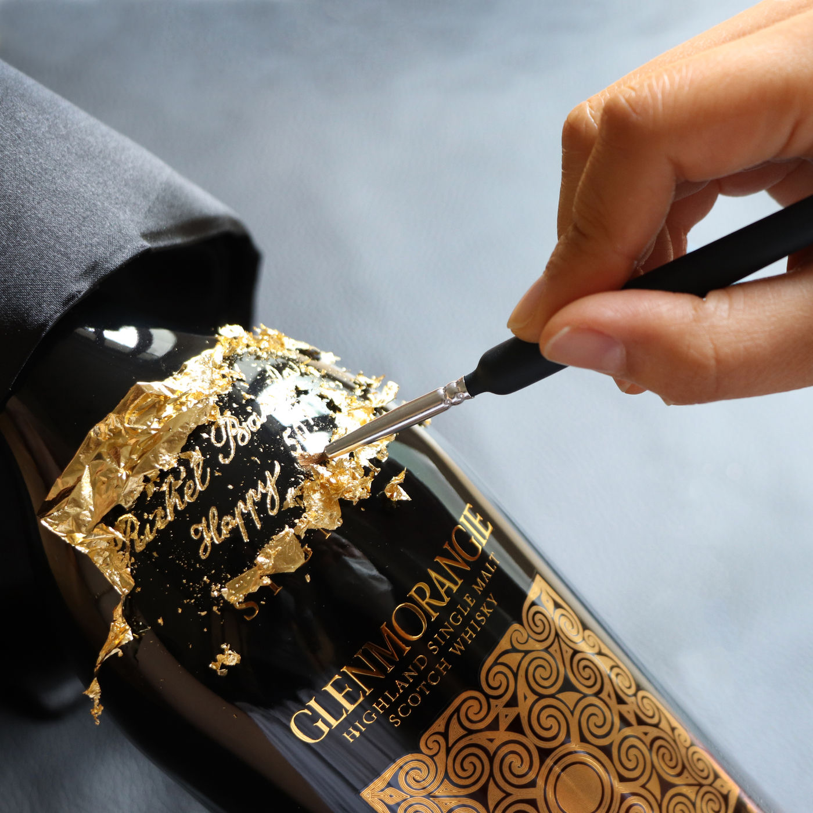
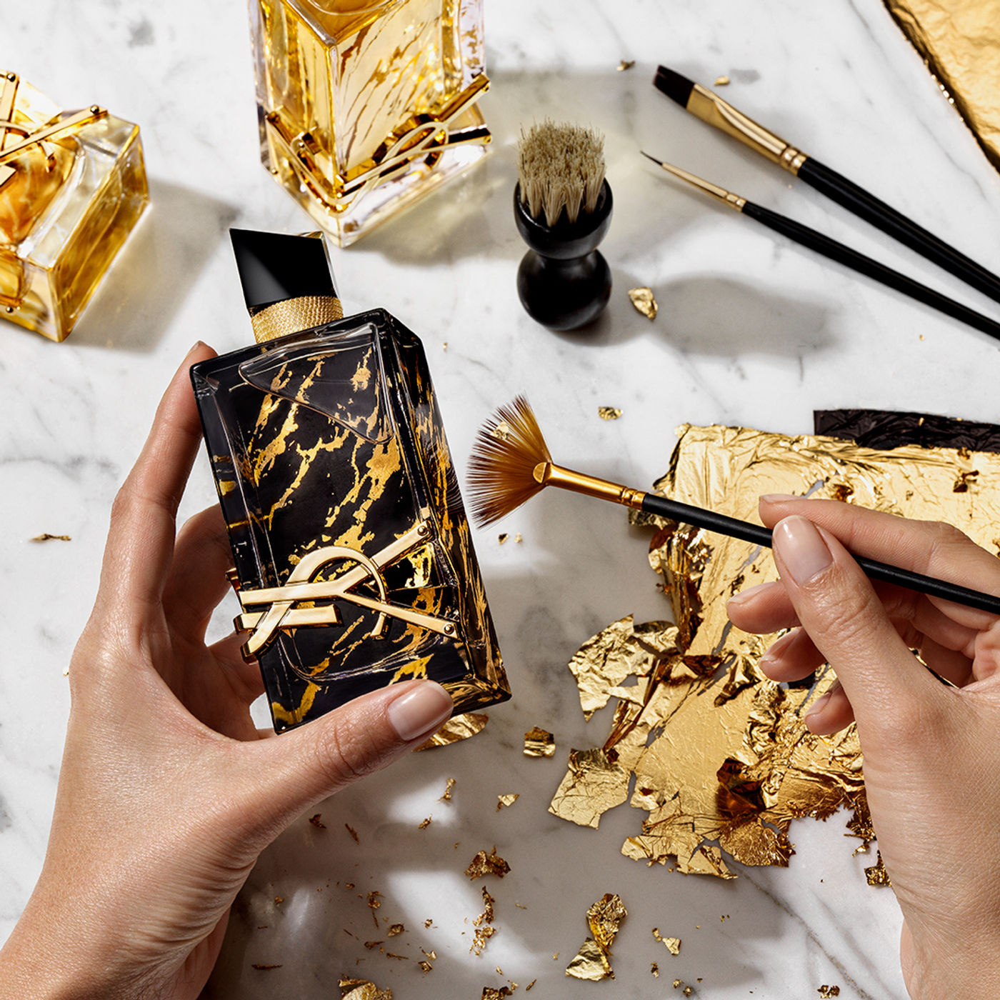
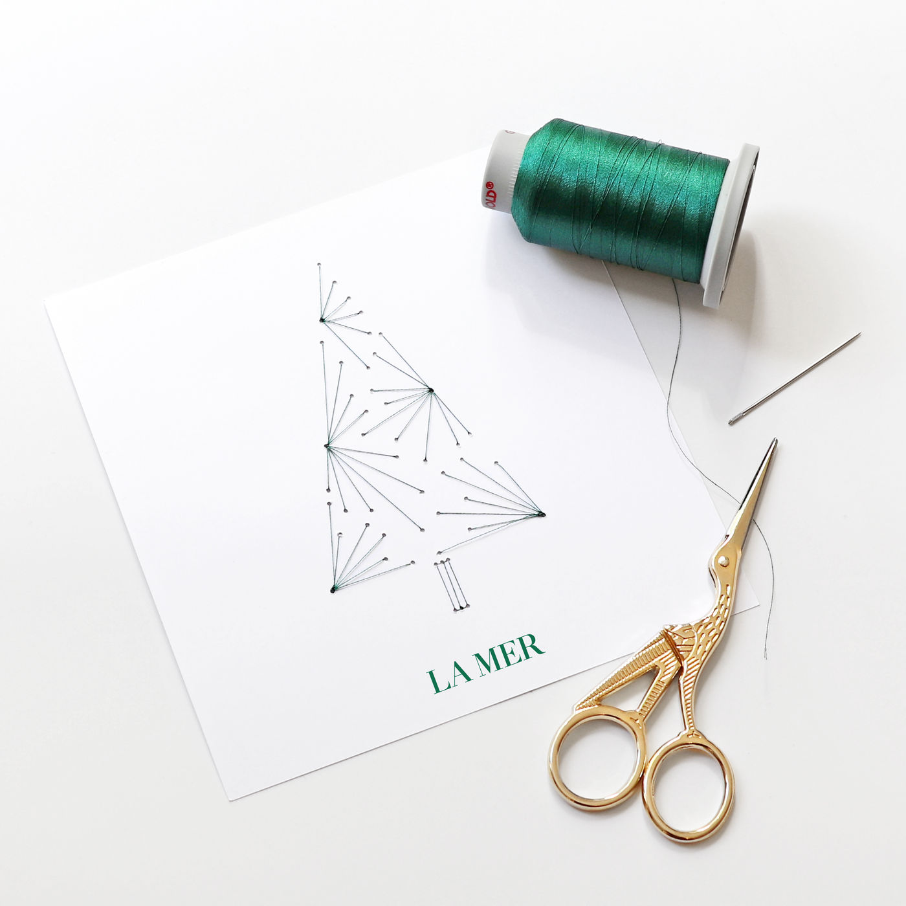
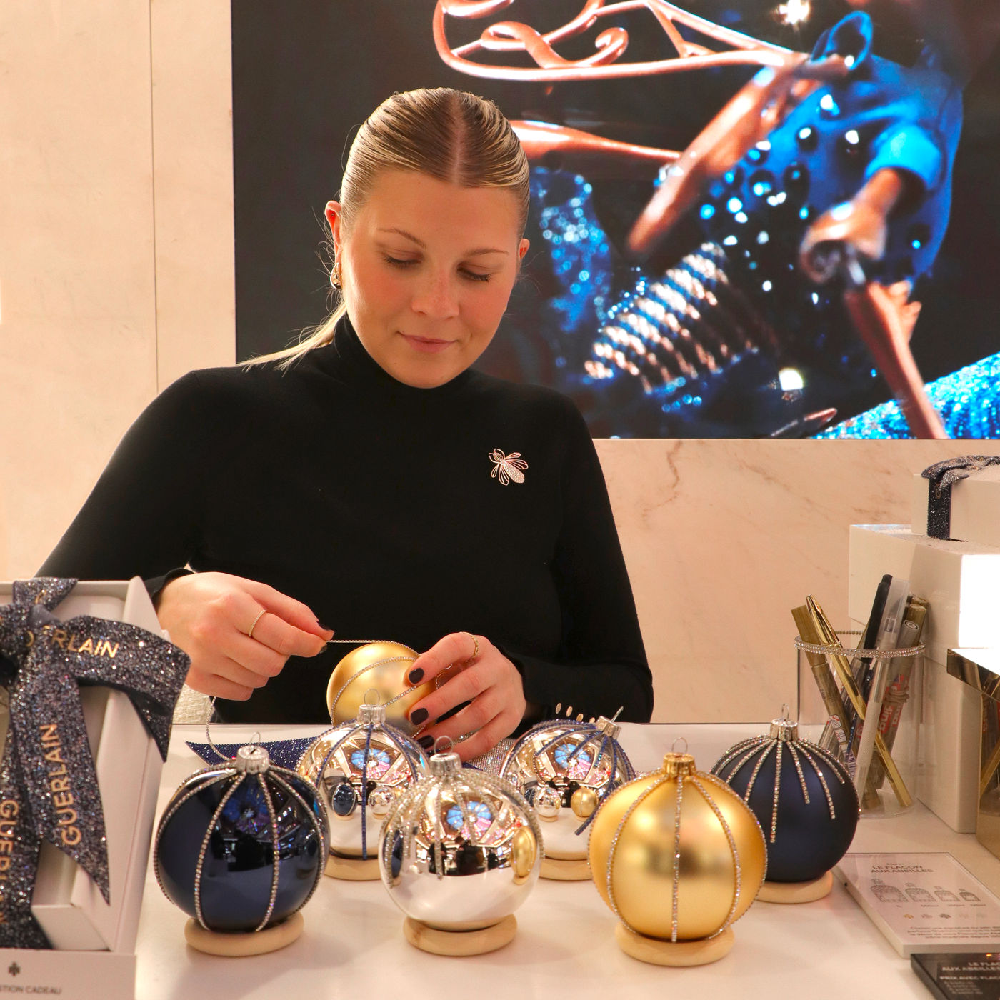
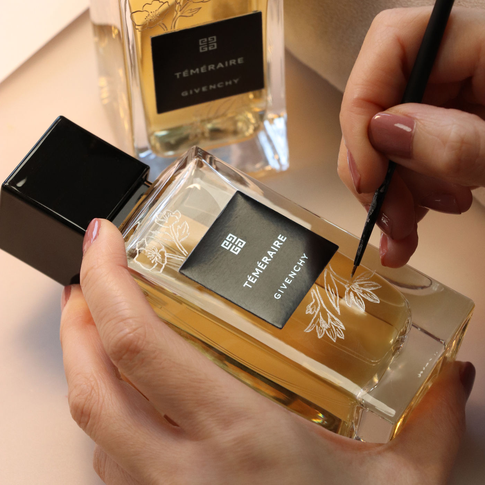
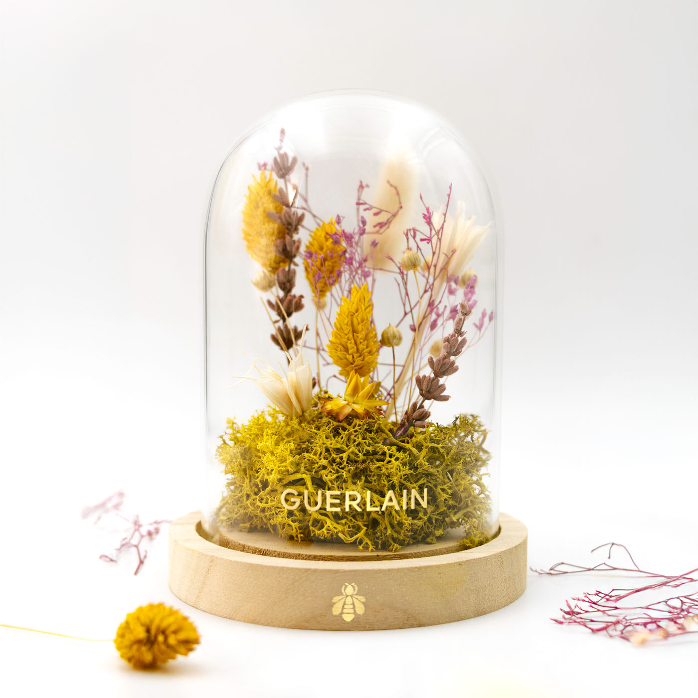
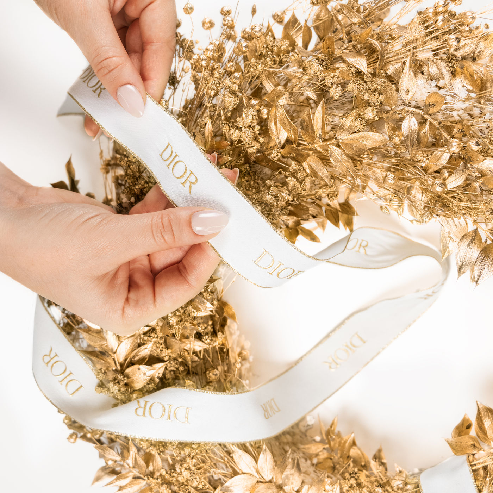
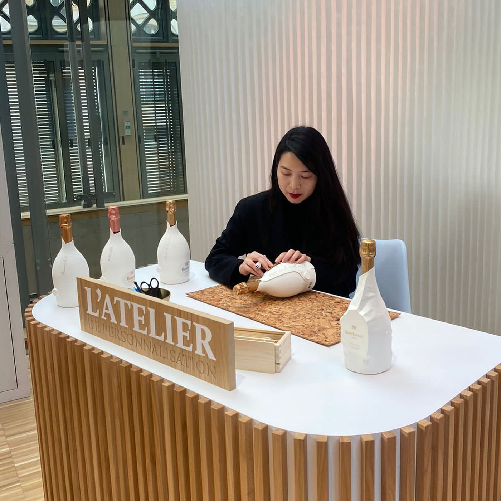
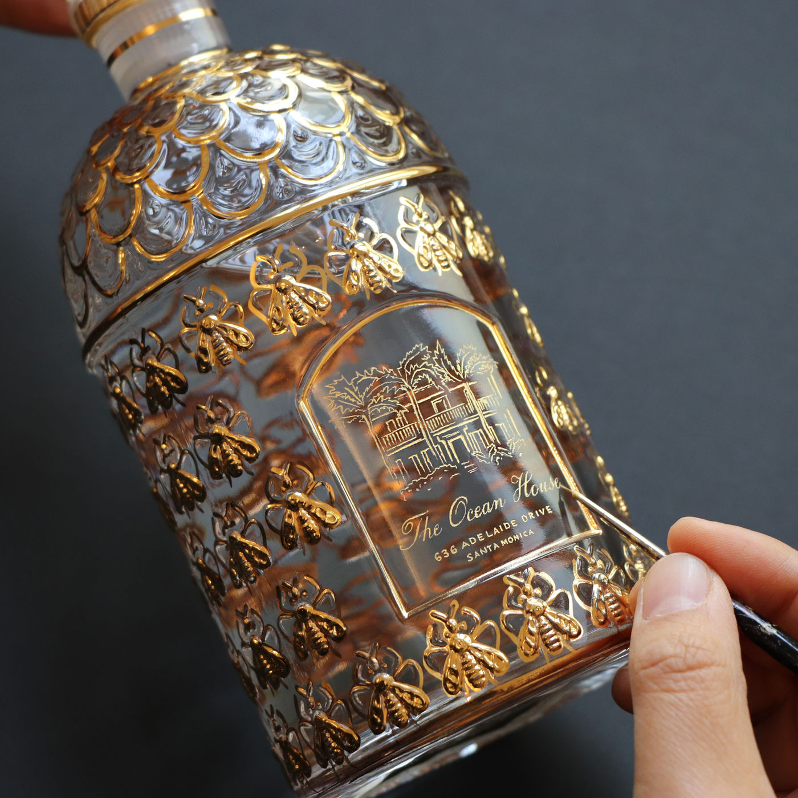

La gravure
Sur le verre, la céramique, la laque. Tracée à la pointe par un artiste, d’une initiale à une illustration complète.
Atelier parisien depuis 2014
L’atelier de personnalisation
des maisons de luxe
Graver, dorer, broder.
Le geste, à la main,
devant vos clients.
Donner de l’âme et de la couleur
à vos ateliers de personnalisation.
Nous enrichissons l’expérience client des plus grandes maisons de luxe. Chaque atelier est dessiné, prototypé et joué à la main, en point de vente comme en événement, par des artistes formés dans notre atelier du 17e.
Plus de dix ans, une soixantaine d’ateliers déployés en France et dans les marchés internationaux.
Maisons accompagnées : Guerlain, Dior, Givenchy, Chanel, Yves Saint Laurent, Cartier, Ruinart, Christian Louboutin, Lalique, Chaumet, La Mer, Estée Lauder, Chloé, Martell.

Sur le verre, la céramique, la laque. Tracée à la pointe par un artiste, d’une initiale à une illustration complète.

Sur le verre, le marbre, le papier. Un motif reproduit à l’identique, ou posée plus librement pour une pièce qui ne se répète pas.
Sur le textile, le cuir, le bois, le verre. La technique la plus libre : toute la palette, tous les styles.

Sur le textile. Un logo, un dessin vectoriel ou un texte, repris fil à fil.
Sur le cuir, le papier, le bois. Le marquage en creux, avec ou sans or, dans la typographie de la maison.

Posés un à un, prénom par prénom, devant le client qui repart avec.

Illustrations sur mesure réalisées en gravure sur verre, à l’espace Pic Antin des Galeries Lafayette Haussmann.

Atelier participatif de composition florale au siège de la maison, pour le lancement de la crème riche.

Couronnes de Noël en fleurs et végétaux séchés, confectionnées pour les soirées en France.

Atelier événementiel de dorure à chaud, au Carreau du Temple.
L’atelier s’installe dans votre point de vente ou votre événement. Nos artistes personnalisent devant le client, du corner d’une journée au déploiement international avec guidelines pour vos marchés.
Des dispositifs déjà éprouvés, immédiatement disponibles, que nous adaptons à votre direction artistique sans repartir d’une page blanche.
De la pièce unique à la série de quelques centaines, personnalisées à la main dans notre atelier parisien.
Il imagine les ateliers avant qu’ils existent, et dessine ce qui les accompagne : print, packaging, design produit, illustration.

Boulevard Berthier
Les artistes, le studio graphique et les chefs de projet travaillent au même endroit, dans le 17e. Les prototypes se font sur place, et se corrigent le jour même.
Aurélie de Dion, fondatrice et directrice de création. Célia Lannes, directrice exécutive.
Agnès Maunoury, Victoire Vidal, Juliette Leroux. Mégane Vinson pour la formation des équipes.
Stéphane Lemire, animation retail et développement.
Yui Matano et Manon Solanet, directrices artistiques. Ingrid Fleurant et Manon Leemput, graphistes.
Un projet
35 boulevard Berthier
75017 Paris
+33 1 44 09 81 85
contact@cobaltcreation.com
Du lundi au vendredi, 9h30 à 18h30